Для виконання завдання поставленого у даній роботі необхідно застосувати 4 способи застосування JS. Кожен із даних способів використовується на нашому сайті. Результати можно перевірити перейшовши на нижні підпункти.
Постановка задачі
Лабораторної роботи №4
-
Способи функціонального
Застосування JavaScript
Схема URL
Обробник подій
Вставка(SCRIPT)
-
МАСИВИ(4 пункт)
Масиви Трофімчук
Масиви Анісімов
Виконання 6 пункту
ВИСНОВКИ
Тема: ФУНКЦІОНАЛЬНЕ ЗАСТОСУВАННЯ JAVASCRIPT У HTML-ДОКУМЕНТІ. КЛАСИ,ОБ’ЄКТИ, ФУНКЦІЇ, В МОВІ JAVASCRIPT. ПОДІЇ ТА ОБРОБКА ПОДІЙ. ПРОГРАМНА ВЗАЄМОДІЯ З HTML ДОКУМЕНТАМИ НА ОСНОВІ DOM АРІ
Мета: придбати практичні навички роботи маніпулювання інформаційним вмістом Web-документа засобами мови JavasSript, використання об’єктів,масивів, функцій, подій, обробників подій у сценаріях на мові JavasSript
ХІД ВИКОНАННЯ РОБОТИ
- У звітному HTML-документі розмістити тему та постановку задачі лабораторної роботи №4.
- У власному сайті або на окремій WEB-сторінці, використовучі функції, застосувати 3 способи функціонального застосування JavaScript: гіпертекстове посилання (схема URL); обробник події (handler); підстановка (entity); вставка (тег SCRIPT).
- Розмістити результати виконання та програмний код 2 пункту у звітному HTML-документі, записавши назви файлів HTML-документів.
- Використовуючі сценарій на JavaScript, виконати завдання.
- Розмістити результат виконання та програмний код 4 пункту у звітному HTML-документі.
- Забезпечити виконання завдання згідно із варіантом, сформувати необхідні дані, вбудовані у програму, у вигляді масивів, виконати тестування програми.
- Розмістити результат виконання та програмний код 6 пункту у звітному HTML-документі.
- У власному сайті на свій розсуд застосувати сценарії на JavaScript. Продемонструвати викладачу та відобразити у звітному HTML-документі.
- У звітному HTML-документі оформити звіт лабораторної роблти №4
Для виконання даного завдання був змінений тег 'a'. При натисканні на посилання з'являється форма із запитанням чи необхідно виконати перехід на сторінку замовлення столику.
Код:
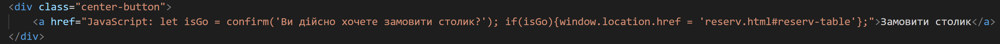
Результат:
В даному пункті використовуємо подію натиску на кнопку. У результаті буде змінюватись меню
Код HTML:
Код JS:
Результат 1:
Результат 2:
Для виконання буде продемонстровано використання вставки скрипта у форматі файлу.
Код HTML:
Код JS:
Результат:
Завдання Трофімчук
Код HTML:
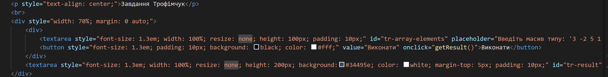
Код JS:
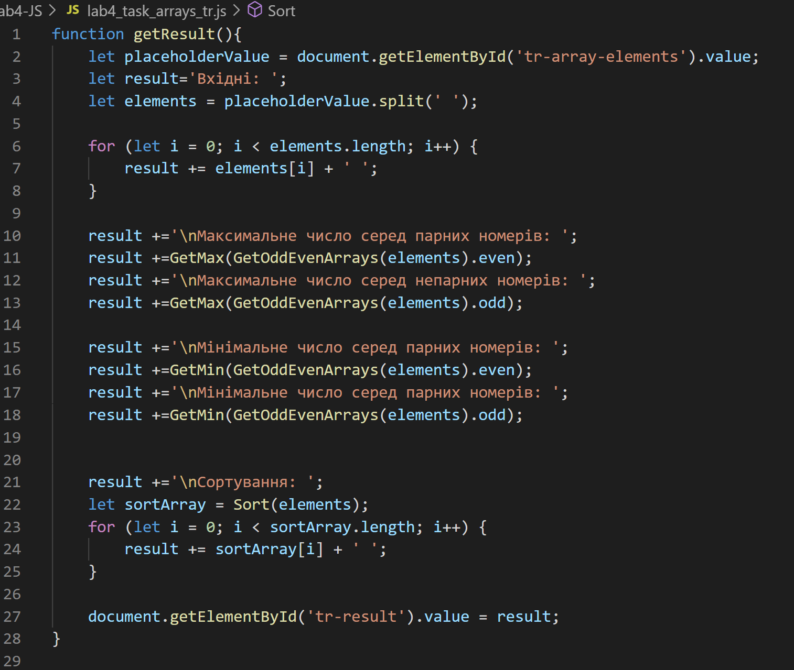 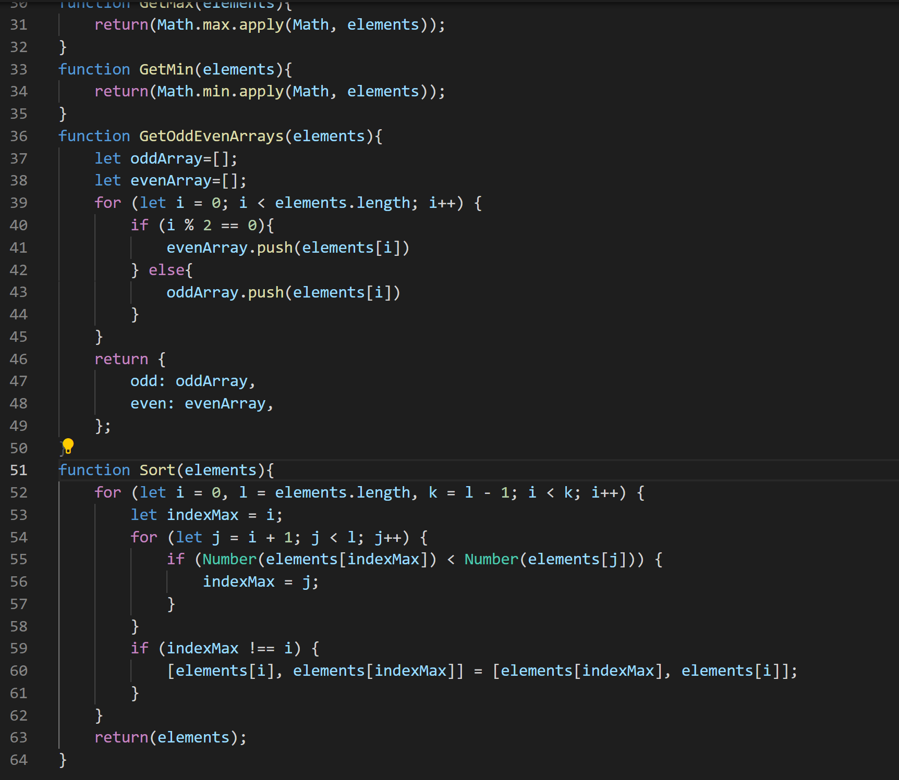
Завдання Анісімов
Код HTML:
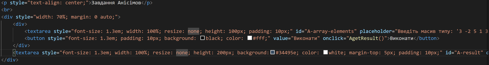
Код JS:
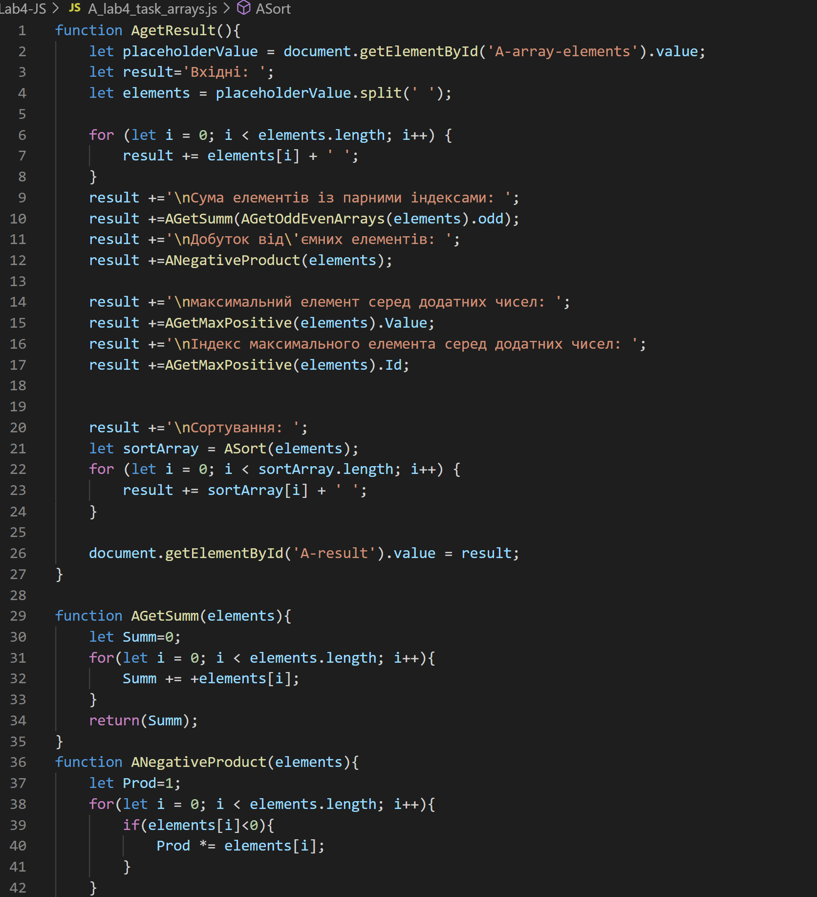 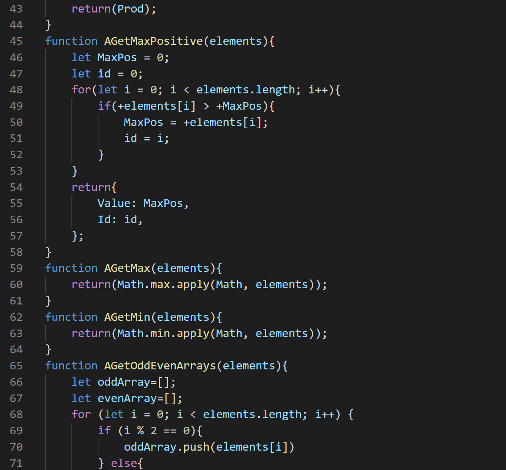 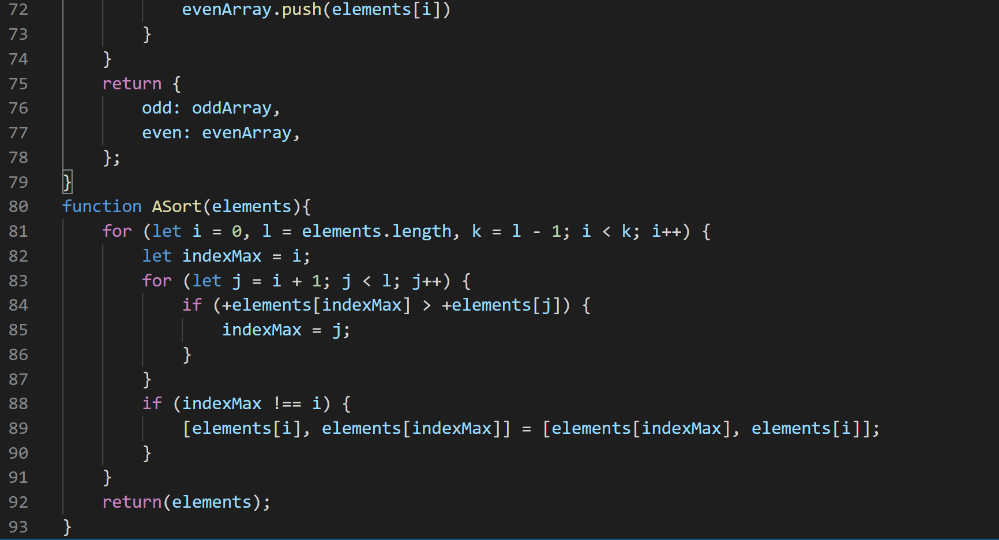
Завдання Трофімчук
Задачею було створити слайдер. Оскільки слайдер підходить до тематики нашого сайту він був доданий на окрему сторінку сайту.
Код HTML:
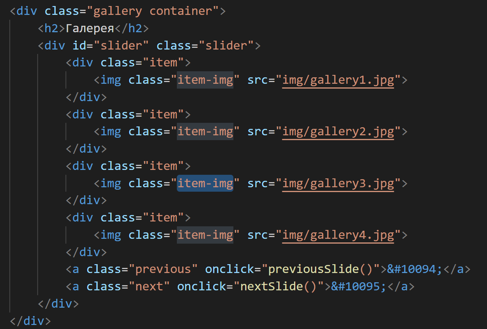
Код JS:
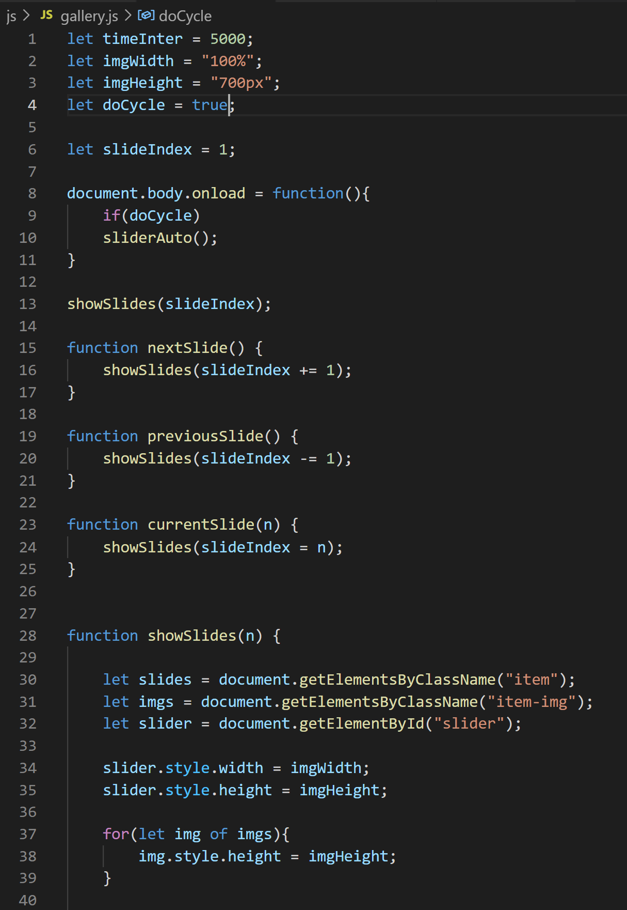

Результат:

Завдання Анісімов
Задачею було згенерувати багаторівневе меню, взявши його елементи із масиву.
Код HTML:
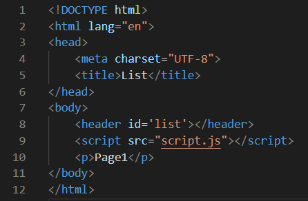
Код JS:
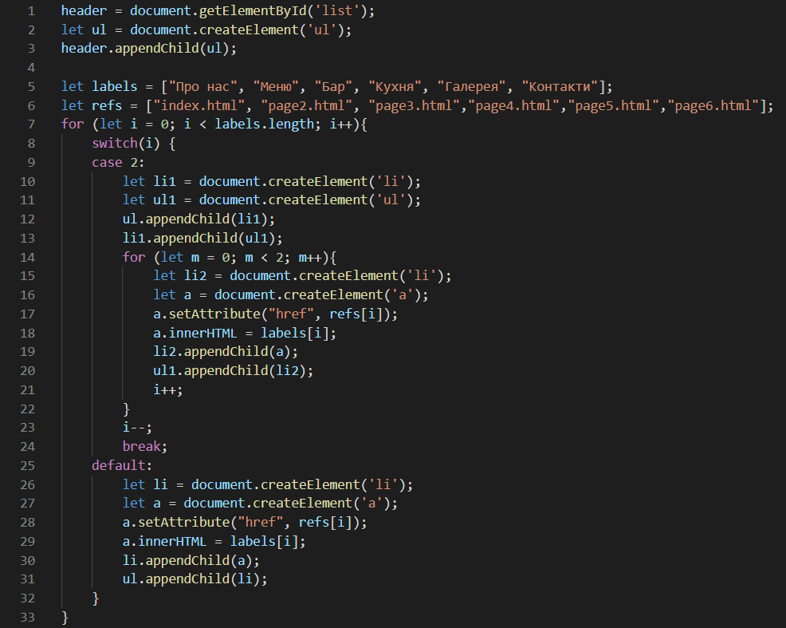
Результат:
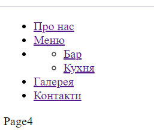 Перегляд тут
У даній роботі було використано мову програмування JavaScript для вирішення ряду задач.
Завдяки js коду на наш сайт було додане адаптивне меню, взаємодія із користувачем та обробка події на сторінці меню.
Усе це зробило наш сайт більш живим. В другій частині лабораторної роботи ми навчились працювати з масивами, розробили багаторівневе меню
та слайдер картинок.
10